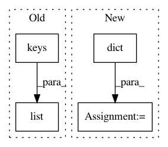

cb45448315bc0f4956e45b7e768ce557a2198050,dataset/models/tf/layers/conv_block.py,,,#,9
Before Change
})
LAYER_KEYS += str(list(_C_LAYERS.keys()))
GROUP_KEYS += str(list(_C_LAYERS.keys()))
GROUP_KEYS = (
GROUP_KEYS
After Change
.replace("X", "b")
)
C_GROUPS = dict(zip(LAYER_KEYS, GROUP_KEYS))
def conv_block(inputs, layout="", filters=0, kernel_size=3, name=None,
strides=1, padding="same", data_format="channels_last", dilation_rate=1, depth_multiplier=1,
In pattern: SUPERPATTERN
Frequency: 3
Non-data size: 4
Instances
Project Name: analysiscenter/batchflow
Commit Name: cb45448315bc0f4956e45b7e768ce557a2198050
Time: 2017-12-21
Author: rhudor@gmail.com
File Name: dataset/models/tf/layers/conv_block.py
Class Name:
Method Name:
Project Name: scikit-multiflow/scikit-multiflow
Commit Name: 7eff79deedbf2e40d805b3ab5d3ac0c6d8ca334f
Time: 2019-03-01
Author: gwalid94@gmail.com
File Name: src/skmultiflow/trees/nominal_attribute_class_observer.py
Class Name: NominalAttributeClassObserver
Method Name: observe_attribute_class
Project Name: merenlab/anvio
Commit Name: bb21b3314c57ec4208af8eed8041091cc51ec68a
Time: 2020-02-26
Author: kiefl.evan@gmail.com
File Name: anvio/profiler.py
Class Name: BAMProfiler
Method Name: generate_variabile_codons_table